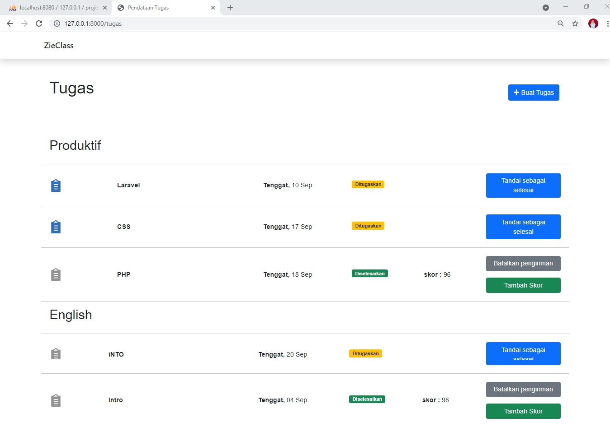
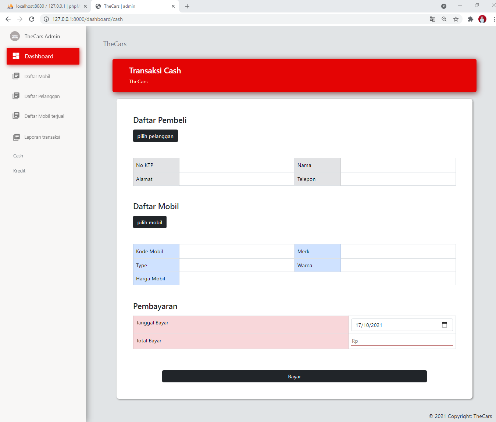
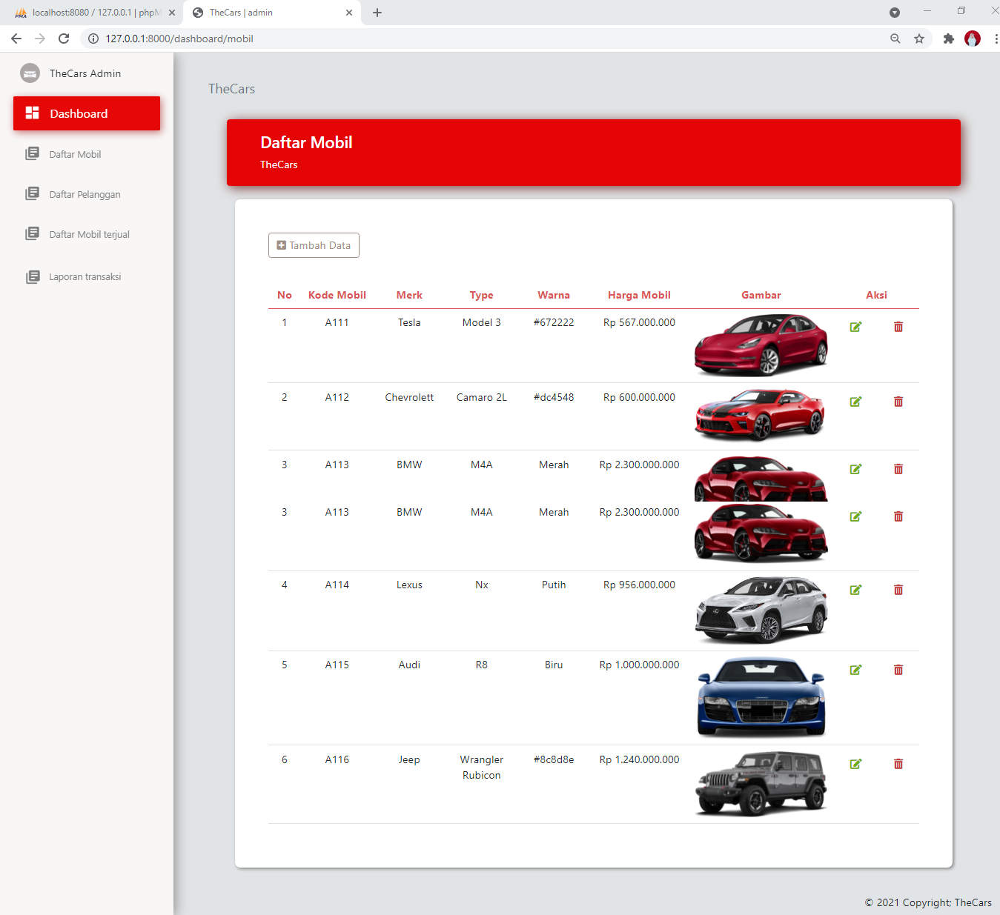

P r o f i l e
About Me
Helo. Nama saya Alifa, saya tinggal di Cianjur dan lahir di Cianjur, 23 Juni 2004.
Saya adalah lulusan dari SMKN 1 CIANJUR jurusan Rekayasa Perangkat Lunak (RPL) tahun 2022.
Tertarik dalam bidang IT yang membuat saya terus belajar mengenai programming, terutama dalam pembuatan website.
Nama : Alifa Tazkia Irdani
Umur : 17
Telepon : +62 895 0728 7020
E-mail : alifairdani11@gmail.com
About The
Skill


Skill
E x p e r i e n c e
H i ! , I ' m A l i f a
How about My experience ?
Selama 3 tahun menggeluti dunia programming, membuat saya mempunyai banyak pengalaman didunia pemrograman. Dimulai dari mengenal bahasa pemrograman C++, HTML, CSS, php, JavaScript, lalu merambat mengenal Laravel membuat saya lebih semangat untuk membuat lebih banyak program yang berpotensi baik kedepannya. Semua ilmu itu saya dapatkan bukan hanya dari dalam sekolah, akan tetapi saya pun banyak mencari ilmu mengenai Data analytics misalnya dengan cara mengikuti bootcamp, dan lain-lain. Dalam kurun waktu tersebut ada beberapa web yang sudah saya buat mulai dari membuat web Portofolio, Guest Data, Pencarian Makanan, Kredit Mobil, Mini Market, Laundry, dll.PROJECT
website Data Tugas


website Duta Mobil


website Create Blog


website Laundry